|
| Figure 7a |
March 18, 2006
As I was reminded by a discussion-partner during the course of this past week, I am among the relatively few, surviving exceptions to an epidemic loss of actual knowledge of even the rudiments of metaphysics among presently living generations. Some hours after that conversation of the past week, Bruce Director's long-promised draft introduction to the subject of the Arithmetic-Geometric Mean reached me on my current brief tour in Europe. This latest pedagogical by Bruce comes near to the core of a competent illustration of the practical meaning of metaphysics as such. I thought it useful to add the following bit of prefatory spice to Bruce's work which follows immediately here.
Only superstitious modern savages would still, today, define "metaphysics" as pertaining to matters outside the physical universe. Superstitious people think of "metaphysics" as signifying some "'outside" the physical. Unlike superstitious people, literate thinkers recognize "metaphysical" as signifying a higher realm of physics, the location of the cause of those shadow-like effects we associate with the experience of nave sense-perception. Since intelligent minds recognize that sense- perception is only a matter of seeing shadows cast by the real, unseen universe, no serious science would be based on the superstition that the experience of our sense-perception is direct knowledge of the real universe. The idea of metaphysics, as first developed in European civilization by such exemplary pre-Aristotle Greeks as the Pythagoreans and Plato, is referenced to what we can demonstrate to be universally efficient, but "unseen" principles, principles through which mankind can exert universally efficient control over relevant aspects of the relative universality of our sensory experience.
Thus, ontologically, any discovered universal physical principle, such as the Pythagoreans' purely geometric doubling of the square and cube according to the method of Sphaerics, or Kepler's uniquely original discovery of an anti-Cartesian, anti- Newtonian principle of universal gravitation, are mental objects which are coextensive with the universe. This leads, in the latter case, to Albert Einstein's conviction that the successive work of Kepler and Riemann are the foundation for a useful conception of the universe. The universe as a whole is bounded by the set of universal physical principles, such as gravitation as defined by Kepler (not the Cartesians, Newtonians, et al.); this defines a self-bounded universe, which is therefore a finite universe. Such is the standpoint typified by competent metaphysics.
Since the work of Carl Gauss, the scope of competent metaphysical thinking has been extended beyond the bounds of the respective infinitesimal and a finite infinity, by the rigorously defined implications of V. I. Vernadsky's definitions of the Biosphere and Noösphere. The universe as a whole is bounded, dynamically, by the universal principles of life and of human cognition.
However, on the relatively simpler level, the relationship between assumed straight line and curve, as addressed afresh by Bruce, are typically elementary. A universe defined in terms of straight lines, does not actually exist. I have devoted my life since early adolescence to rejecting anything resembling the definitions, axioms, and postulates of a Euclidean or kindred geometry. The geometry of localized vision, is a mere shadow cast upon perception. The real universe is located otherwise, in the universe of Pythagorean-Platonic Sphaerics. It is crucial discontinuities arising, as universals, within the domain of Sphaerics, as merely typified by cubic and biquadratic constructions, which are the simplest roots for the notions of the metaphysical in the domain of practice of Sphaerics. This primitive basis for metaphysics is most conveniently expressed, pedagogically, by the challenge of the arithmetic-geometric mean relationship.
The goal of exploring the latter issue here, is not merely a matter of elementary mathematical physics. It is a matter of becoming able to situate one's own mortal existence within the metaphysical reality of the universe at large.
March 17, 2006
At the dawn of the nineteenth century, Carl Gauss determined the orbit of Ceres and provided a new demonstration that the astrophysical domain is harmonically quantized as Johannes Kepler had established at the start of the seventeenth. At its close, Albert Einstein and Max Planck confirmed that the microphysical domain is similarly quantized, as Kepler, Gauss, Andre-Marie Ampere, Wilhelm Weber and Bernard Riemann had previously indicated. But for most of the twentieth century, most scientists, in conformity with the cultural pessimism that dominated European culture during that time, rejected the method that was the true source of these discoveries, and fled into the wasteland of radical positivism. This view rejected the approach that Riemann had outlined in his 1854 Habilitation Dissertation, where he stated that there was a fundamental, but lawful, change in the characteristic of physical action, from the domain of ordinary experience into the astro and micro physical domains. For Riemann, as for Leibniz before him, “Knowledge of the causal connection of phenomena is based essentially upon the precision with which we follow them down into the infinitely small.” The postivists, on the other hand, seeking to reconcile the increasing irrationality of social relations that was being induced by the spread of existentialism from British and continental European pro-feudalist circles, adopted the conviction that the physical world was as irrational as they were. Thus that change, which Kepler, Leibniz, Gauss, Riemann, et al. recognized as the start of a trail that led to a deeper understanding of universal principles, the positivists saw as a road to a utopia in which they could disregard universal principles and arbitrary will ruled.
Nevertheless, the accomplishments of the nineteenth century were successfully mined for technological applications during this period, despite the fact that the miners had become increasingly unconscious of, and even hostile to, the true source of the riches they were pursuing. Such efforts brought forth mountains of new experimental evidence, in the form of anomalous effects in the macroscopic domain that indicated the change in the microscopic domain of which Riemann spoke. Each new load produced a growing discrepancy between the experimental evidence and the prevailing opinion that “explained” such phenomena as the effects of an essentially random process. As in Kepler’s day, many sought to simply paper over such contradictions by introducing new statistical formulations which were the modern equivalent of Ptolemy’s epicycles--mathematical fictions designed, like the fascist legal arguments of Carl Schmitt or Dick Cheney’s counselors, to justify an anti-human epistemology, rather than to further science.
Now, as the twenty-first century dawns, the epistemological implications posed by these concepts can no longer be ignored. For the sake of progress in both science and society as a whole, a fresh approach, rooted in the work of Kepler, Leibniz, Gauss and Riemann (as these were rooted in the method of Pythagorean {Sphaerics}), must be adopted. To do this competently, the experimental evidence brought to the surface by these nineteenth century discoveries, must be viewed from the more advanced epistemological standpoint of the twentieth century’s most fruitful scientific development: Lyndon LaRouche’s discoveries in the science of physical economy.
When Gauss told the world where to find the asteroid Ceres, he had not only accomplished a stunning scientific achievement, he had demonstrated that the then prevailing methods of physical science had become insane. Ceres had first been observed by the Italian astronomer Giuseppe Piazzi on the first day of the new century, January 1, 1801. For 41 days Piazzi followed Ceres from night to night, until on February 11, it disappeared into the glare of the sun. For the next six months, all the professional astronomers labored to determine, from Piazzi’s small number of observations, the characteristic of Ceres’ orbit, so as to be able to determine when it would again become visible. They all failed. In August, Gauss began work on the problem, and in September, he announced where to look for the missing object. His projection diverged widely from the one insisted upon by the experts. Yet, on the first clear night in October, Ceres was sighted where Gauss forecast, proving the young Gauss right and the experts wrong.
What did Gauss know that the experts did not? Those who failed to find Ceres had rejected the method of Kepler and Leibniz, and accepted the false, but popular belief that Kepler’s astrophysics had been superceded by the neo-Euclidean methods of Sir Isaac Newton. Kepler had shown that the principle of universal gravitation was characterized by a physically determined harmonic ordering, whereas Newton had insisted that planetary motion was occurring within an otherwise empty backdrop of absolute space whose characteristics were essentially those derived from the axioms, postulates and definitions of Euclid. Gravity, for Newton, was not a universal principle, but merely a name for a mathematical expression that, {incorrectly}, described its effects as the pair-wise interaction between two point masses attracted to each other proportional to the product of those masses divided by the square of the distance between them (“the inverse square law”). Newton derived this formula by an algebraic manipulation of the mathematical form of Kepler’s harmonic principles. His followers then proclaimed, sophistically, that Kepler’s physically determined harmonic principles were merely the logical consequence of Newton’s inverse square law. However, as Leibniz repeatedly emphasized, Newton’s algebra cannot explain the physics of the solar system as a whole. Nevertheless, imperial mathematicians, such as Euler, Laplace and Lagrange, who were influenced by the circles of Newtonian sycophant and Leibniz-hater Voltaire, attempted to cover up this obvious failing, by applying Newton’s method through the use of grandiose systems of equations which sought to “explain” the complex motions of the solar system as the sum total of a large, but finite, number of pair-wise interactions. While these equations provided many hours of occupation for the mathematicians, they failed when confronted with the physical reality posed by Piazzi’s discovery.
Gauss, on the other hand, as a student of the 18th century’s chief proponent of Leibniz, A.G. Kaestner, rejected the Newtonian sophistry of absolute space, recognizing that Piazzi’s then-unnamed object was a creature in a solar system governed by principles that expressed the harmonic relationships discovered by “our Kepler” , as he was called by both Kaestner and Gauss. As Kepler emphasized, and Leibniz advanced with his design for an infinitesimal calculus, these harmonic relationships pervade the entire universe, and thus are present in every small interval of action, including Piazzi’s relatively infinitesimal arc of observations. Such harmonic relationships are not determined {a priori}, but are embedded into the structure of the solar system by the process that underlay the universe’s creation–a process that also included the creation of Man as a cognitive power capable of discovering, and intervening in that process. Thus, the location and characteristics of the orbits of bodies in the solar system are not arbitrary, as Newton insisted. They are determined in conformity to Kepler’s principles, which reflect the harmonic characteristics of the physical creation of the solar system . In other words, the celestial bodies do not determine the orbits. The harmonic characteristics of the solar system as a whole, determine the quantized locations, and characteristics, of the orbits, which, in turn, determine the motion, and physical characteristics, of the bodies. However, those harmonic characteristics, which reflect principles that are not directly perceptible, are presented to us, embedded in the observed motion of heavenly bodies. True science recognizes this, and seeks to unfold these harmonies from the observations.
Further, Gauss recognized that Piazzi’s observations reflected the interaction between two Keplerian orbits, that of the Earth, whose characteristics were known, and that of the new object, whose characteristics had to be determined. Thus, to determine the motion of Ceres, Gauss sought to determine the relationship between two complete {Keplerian} orbits, not individual objects moving in empty space.
The details of Gauss’s discovery have been elaborated in other locations.1 Viewed retrospectively, Gauss’s discovery is an impressive achievement in scientific thought, demonstrating the superiority of the method of Kepler and Leibniz over the inferior, reductionist methods so in vogue throughout the twentieth century and today. But a deeper, more important question is posed by a review of Gauss’s accomplishment: What was the spark of insight that enabled Gauss to see clearly the means to precisely determine Ceres’s orbital characteristic from such a small interval of observations?
By his own testimony, the source of that inspiration was {not} Piazzi’s discovery. As Gauss recounts in his Preface to his major work on astronomy, {Theory of the Heavenly Bodies Moving About the Sun in Conic Sections}, Gauss had considered solving the general problem of determining a planetary orbit from only a small number of closely spaced observations before he even became aware of Piazzi’s observations.
Some ideas occurred to me in the month of September of the year 1801, engaged at the time {on a very different subject}, which seemed to point to the solution of the great problem of which I have spoken. Under such circumstances we not unfrequently, for fear of being too much led away by an attractive investigation, suffer the associations of ideas, which, more attentively considered, might have proved most fruitful in results, to be lost from neglect. And the same fate might have befallen these conceptions, had they not happily occurred at the most propitious moment for their preservation and encouragement that could have been selected. For just about this time the report of the new planet, discovered on the first day of January of that year with the telescope at Palermo, was the subject of universal conversation; and soon afterwards the observations made by that distinguished astronomer Piazzi from the above date to the eleventh of February were published. Nowhere in the annals of astronomy do we meet with so great an opportunity, and a greater one could hardly be imagined, for showing most strikingly, the value of this problem, than in this crisis and urgent necessity, when all hope of discovering in the heavens this planetary atom, among innumerable small stars after the lapse of nearly a year, rested solely upon a sufficiently approximate knowledge of its orbit to be based upon these very few observations. Could I ever have found a more seasonable opportunity to test the practical value of my conceptions, than now in employing them for the determination of the orbit of the planet Ceres, which during these forty-one days had described a geocentric arc of only three degrees, and after the lapse of a year must be looked for in a region of the heavens very remote from that in which it was last seen? (emphasis added–bmd)
In that same location, Gauss also ridiculed the prevailing view of the Newtonians, who had deluded themselves into believing their “curve-fitting” approach was sufficient because of its apparent success in determining the orbit of Uranus in 1781. As Gauss noted, Uranus’s very slow movement and nearly circular orbit simplified the problem, giving an illusion of solvability by Newtonian methods. But,
To determine the orbit of a heavenly body, without any hypothetical assumptions, from observations not embracing a great period of time, and not allowing a selection with a view to the application of special methods, was almost wholly neglected up to the beginning of the present century; or, at least, not treated by any one in a manner worthy of its importance; since it assuredly commended itself to mathematicians by its difficulty and elegance, even if its great utility in practice were not apparent. An opinion had universally prevailed that a complete determination from observations embracing a short interval of time was impossible, –an ill-founded opinion, –for it is now clearly shown that the orbit of a heavenly body may be determined quite nearly from good observations embracing only a few days; and this without any hypothetical assumption. (emphasis in the original.)
Gauss anticipated the need for a solution to a problem which everyone else thought would not exist because, it if it did, it couldn’t be solved within the framework of their {Newtonian} concept of the universe as a whole. The difference between Gauss and the others was not a matter of mathematical skill, although Gauss clearly demonstrated a proficiency in these matters far greater than his adversaries. It was a difference of world-view. Gauss, following in the footsteps of the Pythagoreans, Cusa, Kepler, Leibniz and Kaestner, understood that the solution to “practical” problems, such as the determination of the orbit of Ceres, flowed from knowledge of the underlying universal principles. Since his rivals had accepted the neo-Aristoteleanism of empiricism, they rejected the possibility, in principle, of discovering such principles. Consequently, instead of focusing on the underlying harmonic principles, they fixated on the visible object which they imagined to be moving in an essentially arbitrarily determined path in an otherwise empty, Euclidean-type space--a fixation which produced the documented failure.
But as Gauss emphasized, his search was for the underlying principles that transcended the visible objects, so, without even seeing them, he knew how to find them. The search for those principles in which Gauss was engaged in September 1801, as documented in his contemporary notebooks and subsequent correspondence, included those matters contained in his 1799 doctoral dissertation, his 1801 {Disquisitiones Arithmeticae}, his unpublished investigations into the implications of elliptical functions, and his investigations of a new transcendental function, which Gauss called the {arithmetico-geometric} mean.
As Gauss later wrote to Schumacher on September 17, 1808:
We can now handle the circular and logarithmic functions as easily as one-times-one, but the magnificent gold mine holding the precious higher functions remains nearly terra incognita. I have worked on this a great deal in the past, and when I have the time I plan to produce my own large work on this subject, which I alluded to in my Disquisitiones arithmeticae, p. 539. One is amazed at the extraordinary wealth of new highly interesting truths and relations provided by these functions (among them are functions connected with the rectification of the ellipse and the hyperbola)...
The epistemological significance of Gauss’s new transcendental, the arithmetic-geometric mean, comes fully into view only when Gauss’s discoveries are seen in the light of the Pythagorean concept of means, and when those earlier discoveries are re-viewed from the standpoint of Gauss’ and Riemann’s concept of the complex domain. The appropriate concept of the arithmetic-geometric mean can thus be generated when both these views are held in the mind simultaneously (as if polyphonically), so that their interaction can be grasped as a single idea encompassing the 2500 years of their development.
One of the earliest surviving fragments on the subject of means comes from Plato’s collaborator, Archytas, who developed the theory of the arithmetic, geometric and harmonic means as they are expressed both in music and in respect to the difference between doubling a line, square and cube. Though Aristotle subsequently insisted that any relationship between the mathematical expression of these means, and their appearance in the physical universe with respect to music, astronomy and physics was purely accidental, the Pythagoreans, as Plato documents, understood this congruence as indicative of the efficient connection among the creative nature of the mind, the creation, and the Creator.
This point is important to emphasize for understanding Gauss’s investigation on the level that Gauss understood it. Contrary to the subsequent empiricist commentators, Gauss as a committed anti-empiricist, did not separate mathematical investigations from physics. For Gauss, as for his teacher Kaestner, and his follower Riemann, all scientific investigations are physically determined. Mathematics attempts to express the concepts formed by human mind in its efforts to gain mastery over the principles governing the physical world. This is exemplified by Gauss’s {physical} concept of the complex domain, in which the characteristics of non-visible physical principles can be, “clothed in the geometry of position”. Gauss emphatically distinguished his concept from the Kantian formal-mathematical concept of Euler’s purely “imaginary” numbers.
For the Pythagoreans, Archytas, Plato, et al., though the arithmetic, geometric, and harmonic means may express themselves in different forms, they nevertheless are expressed in a single universe. As Plato emphasized in the {Timaeus}, God gave man both eyes {and} ears so that man could perceive these different expressions of the single universe, and from them, form a single idea which is not directly perceptible by any sense organ, either singly or together. This fact becomes evident when comparing the different perceptions of the same expression. For example, the visual apparatus cannot perceive the proportionality nor the incommensurability of the geometric mean with respect to the doubling of the square, as acutely as the ears perceive a congruent relationship with respect to the Lydian interval.
For both Gauss and his Greek predecessors, means were never mere numbers, in the childish sense of Aristotle, or Euler et al. but an expression of a physical principle of change. Thus, the arithmetic mean expresses a principle of change in which the change produces effects that are equal, and the differences between such effects are equal--such as in the extension of a line. The geometric mean expresses a change in which the effects are unequal, their differences are unequal, but their {relationship} is constant, such as is associated with the doubling of the square. The harmonic mean expresses the inverse of the arithmetic, when the differences between the mean and the extremes are in the same proportion to each other as the extremes are to themselves, as in the case of the hyperbola.
Leibniz gave this concept its more general, modern, form with his idea of a {function}, a concept that expresses the means as the effect of a principle of change. For Leibniz, the arithmetic, geometric and harmonic means were characteristic of what he called {algebraic} functions. To this species of functions, Leibniz added a higher species of functions, which he called transcendental. This latter species is typified by the circular and hyperbolic functions, that express an entirely different species of magnitude, specifically the magnitude expressed by the relationship between the circle and the diameter, and the magnitude expressed by the self-similarity associated with the natural logarithms. Leibniz further showed that the algebraic functions were really special forms of transcendental functions, as both the Archytas construction for doubling the cube and Riemann’s development of the geometric characteristics of complex functions demonstrate.
Leibniz went one step further, showing that, though some physical action could be expressed as a single function, others are expressed as a function of functions. This is most dramatically exemplified by his discovery that the catenary is the {arithmetic} mean between two {transcendental}(exponential) functions. In other words, the physically determined curve of the hanging chain is an arithmetic relationship between two functions that cannot be {arithmetized}! Thus the calculation of the catenary, from the standpoint of algebraic magnitudes, always contains an ambiguity, but it can be determined precisely, as a function of two exponential functions. As with the case of circular and hyperbolic functions (and also with respect to the geometric mean), an algebraic calculation of a transcendental magnitude is always ambiguous, but it can be known precisely as an effect of the function from which it is generated.
Leibniz further indicated that the geometric mean betrween two exponential functions pointed the way to what Gauss would later call the complex domain. The combined work of Leibniz and Gauss demonstrated that the circular and hyperbolic functions are both functions of the exponential functions. With Riemann’s development of his surfaces, the understanding of this connection was deepened.
It is from this standpoint that Leibniz insisted that the algebraic species of magnitude must be considered merely a special case of the higher, transcendental species. This understanding was extended by Gauss, and later, Abel and Riemann, who, in investigating the general form of the problem posed by Kepler’s elliptical orbits, initially established a higher species of transcendental magnitudes, which, due to this origin, were called “elliptical transcendentals,” even though their significance is more universal. Gauss, and later Jacobi, showed that associated with these elliptical transcendentals are another group of functions that have the same relationship to the elliptical functions that the exponential functions have to the circular functions. The reader will be introduced to such functions below. It is this domain to which Gauss refers in his 1808 letter to Schumacher and is the subject of his investigations into the arithemetico-geometric mean.
While Gauss, by his own testimony, was investigating the arithemetic-geometric mean since the age of 14, and continued to investigate it throughout his life, his only published work on the subject concerned his 1818 investigations into the deeper harmonic characteristics of Kepler’s elliptical orbits. Despite the fact that this work, “On the Determination of the Attraction of an Elliptical Ring,” utilized only a very tiny fraction of his discoveries, and presents these in the context of a specific application, it provides a suitable pedagogical pivot for exploring the more general features of Gauss’s concept, provided it is understood with respect to both Kepler’s and Leibniz’s similar investigations, and is recognized as the effect, not the source, of Gauss’s idea.
Gauss’s 1818 work concerns an investigation into the so-called “secular perturbations” of planetary orbits. These are very small and slow variations in what Kepler identified as “orbital elements”, such as the eccentricity, angle of inclination, position of perihelion and the position of the nodes, of a planetary orbit. These changes mean that the planets’ motions are not simply elliptical, but conform to a much more complex path. While Kepler had noted these small variations, he did not investigate them thoroughly because, in the visible planets, these variations were smaller than the margin of observational error. However, as Gauss noted, with the discovery of the asteroid Ceres, followed by the discovery of Pallas, Juno and Vesta, it became possible to examine these previously inaccessible cycles, because the precision of observational astronomy had improved dramatically since Kepler’s time, and the secular perturbations of the asteroids’ orbits were large, in comparison to the perturbations of the orbits of the visible planets. However, despite the relative smallness of these secular perturbations, their physical effects are quite large, as for example, the effect of the changing eccentricity of the earth’s orbit on the cycle of the ice ages!
In other words, the discovery of the asteroids made it possible to carry the investigation of Kepler’s elliptical orbits further into the infinitesimally small, discovering a universal principle that was always present and acting, but not previously susceptible to precise investigations.
Riemann, in his philosophical fragments, later reflected on this process of discovery in science:
When is our comprehension of the world true?
“When the relations among our conceptions correspond to the relations of things.”
The elements of our picture of the world are completely distinct from the corresponding elements of the reality which they picture. They are something within us; the elements of reality are something outside of ourselves. But the connections among the elements in the picture, and among the elements of reality which they depict, must agree, if the picture is to be true.
The truth of the picture is independent of its degree of fineness; it does not depend upon whether the elements of the picture represent larger or smaller aggregates of reality. But, the connections must correspond to one another; a direct action of two elements upon each other may not be assumed in the picture, where only an indirect one occurs in reality. Otherwise the picture would be false and would need correction. If, however, an element of the picture is replaced by a group of finer elements, so that its properties emerge, partly from the simpler properties of the finer elements, but partly from their connections, and thus become in part comprehensible, then this increases our insight into the connection of things, but without the earlier understanding having to be declared false.
The secular perturbations which Gauss investigated are precisely of the character of the “finer” elements of the elliptical orbit. In this respect, Kepler’s elliptical orbit is only a first approximation of planetary motion, as from the finer standpoint, these elliptical elements are themselves changing. This change in the elliptical elements reflects the “finer” effects of the interaction of the planetary orbits with each other. Kepler achieved an initial expression of the relationship among the planetary orbits with his demonstration that the relationships among the minimum and maximum speeds of neighboring planets corresponded to the same types of relationships that human beings use to express polyphonic musical ideas. In his “Epilogue According to the Sun” in his {Hamonice Mundi}, Kepler relates this idea to the Pythagorean notion that the Sun has a relationship to each planet individually, and to all the planets collectively, the former he associates with “understanding” (Gr. dianoös), and “reason” (Gr. noös), respectively. A “finer”, in Riemann’s sense, understanding of the latter is unveiled by Gauss’s treatment of the secular perturbations.
Before Gauss’s ground-breaking discovery, astronomers, typified by Euler, Lagrange and LaPlace treated the secular perturbations by using Newtonian methods that treated planetary motion as the pair-wise interaction of two bodies: the planet and the sun. But the secular perturbations are the effect of the interaction of a three or more bodies, such as the effect of Jupiter on an asteroid. When such a third body enters into Newton’s pair-wise equations, the equations become absurd. This, obviously, should have been enough to discredit Newton’s method completely, as it is evident that more than two bodies inhabit the solar system. Thus, adherence to Newton’s method had to be enforced by {political-cultural} diktats, similar to the twentieth century’s experience with the Copenhagen interpretation of quantum effects or the earlier enforcement of Aristotelean astronomy by feudal dogmas during the period from the murder of Archimedes until Kepler.
Gauss rejected this Newtonian approach altogether, recognizing that these secular perturbations are the effect of an interaction among the totality of motion of one planet on the totality of motion on another planet. For example, the secular perturbations of the orbit of Ceres are the visible effects of Jupiter’s orbit on Ceres’ orbit. But, since the relative positions of Jupiter, Ceres and the Sun are always changing, it is impossible to determine this relationship by adding up all possible relative positions among these three bodies.
Consequently, Gauss realized that to determine the effect of Jupiter on Ceres, an interaction between the two orbits and the Sun must be discovered. He did this by imagining that the disturbed planet (in this example Ceres) is orbiting within an elliptical ring, determined as if the mass of the disturbing planet (in this example Jupiter) were distributed in its orbit in an infinitesimally thin ring whose density is proportional to the time according to Kepler’s principle. Thus, instead of trying to understand the motion as if it were the effect of “particles” moving independently in absolute space, Gauss understood the motion to be occurring in what he would later call, a “potential” field. (Riemann would later define this relationship of the boundary conditions of a potential field to its least-action pathways in a more general form by what he called, “Dirichlet’s Principle”. ) In this case the potential field was bounded on the outside by the elliptical ring and on the inside by the Sun. This potential field has characteristic “least-action” pathways. The effect of these conditions on the disturbed planet, Gauss showed are determined as a function of the boundary conditions of the ring, in relationship to the Sun.
Through his brilliant mastery of Leibniz’s calculus, Gauss established that the variable of this function is the changing radius of the elliptical ring, expressed by the changing relationship between this radius and the angle that Kepler called the eccentric anomaly. (See Figures 1a and 1b.) This integral, in effect, expressed the mean elliptical radius. This “mean”, Gauss showed, is not one of the “Pythagorean” means, but is related to his “new transcendental”–the arithmetic-geometric mean. Specifically, Gauss demonstrated that the mean elliptical radius, measured as a function of the eccentric anomaly, is unchanged, if the major and minor axes of the ellipse are replaced, respectively, by an ellipse whose major axis is the arithmetic mean between the axes of the original ellipse, and whose minor axis is the geometric mean between the axes of the original ellipse. (See Figure 2.) This produces a discontinuous manifold of ellipses that converge on a circle whose radius is the arithmetic-geometric mean of the original ellipse.
|
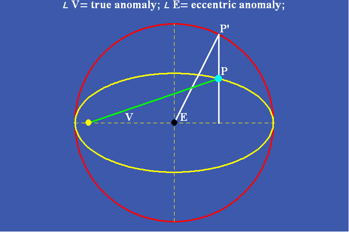 |
| Figure 1a |
|
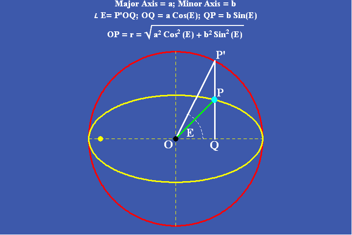 |
| Figure 1b |
|
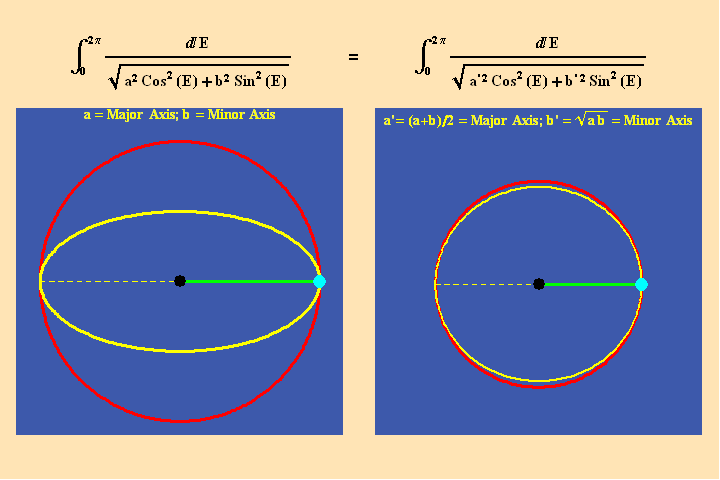 |
| Figure 2 |
This manifold of ellipses can also be developed in the opposite direction by generating an ellipse whose arithmetic and geometric mean between its axes are the axes of the original ellipse. In this direction the sequence of ellipses converges on a line. (See Figure 3.)
|
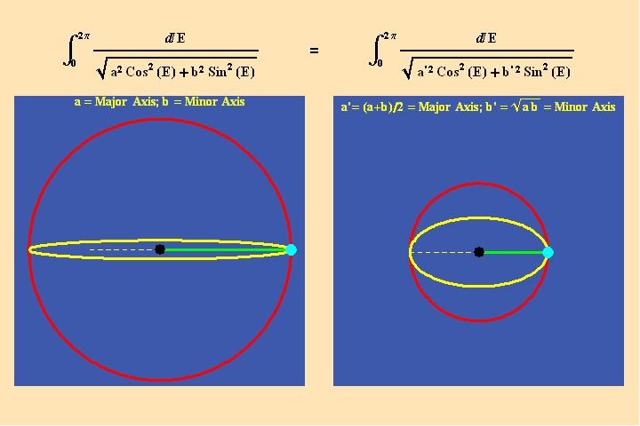 |
| Figure 3 |
However, the overall effect of this relationship is invariant under the transformation of the arithmetic-geometric mean. (See Figure 4.)
|
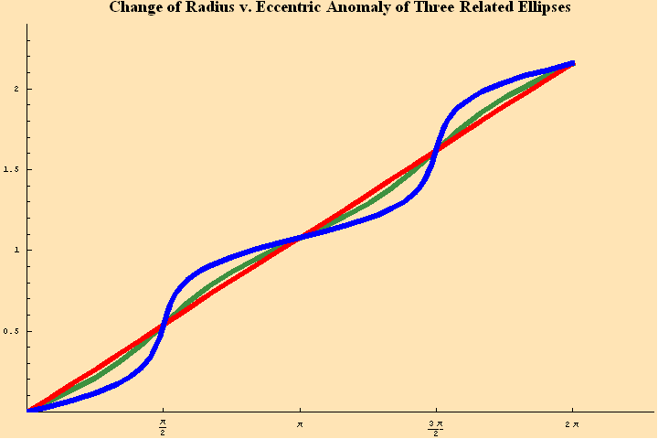 |
| Figure 4 |
Thus, the original ellipse is not unique with respect to this characteristic relationship between the radius and the eccentric anomaly for the orbit as a whole (even though this relationship varies differently within each related ellipse). Rather, it expresses a general characteristic shared by an entire manifold of ellipses. Thus, each arithmetic-geometric mean, signifies a discontinuous, but related set of ellipses, within the manifold of all possible ellipses.
However, this perspective only reveals a small part of the story.
Gauss’s solution to the determination of the secular perturbations of a planetary orbit was a remarkable achievement. But, as Gauss remarked in the abstract to his paper, the principle on which his solution relies is a universal one which, “from the beginning opens up a very extended theory”. This complete picture, Gauss’s real stroke of genius, emerges only when the full range of his investigations into the arithmetic-geometric mean, which spanned most of his life, is taken into account.
A complete treatment of those studies, which Gauss promised in his {Disquisitiones Arithmeticae} and the above cited letter to Schumacher, was never published. But Gauss left a wealth of fragments which became available with the publication of his collected works many years after his death. These fragments, when viewed from the standpoint of their elaboration by his most insightful student, Bernhard Riemann, provide a clear picture of the magnitude of Gauss’s insight. However, the epistemological implications of Gauss’s investigations are so deep that many riches are yet to be gleaned from them, and their direction can only be indicated, not adequately presented, in a summary form such as the present pedagogical discussion.
Gauss, himself, stressed the greater importance of the deeper underlying principles over the practical applications of his discovery in one of those fragments:
There are always people, who know nothing of the sublimity of eternal truths and their divine beauty and have thus learned to estimate the value of mathematical investigations only according to their applicability in the domain of applied science. The above developments will have use in rendering our investigations more agreeable to these people. Indeed, no one is ignorant of how great the use is, in physical astronomy or the theory of planetary perturbations, of such rapidly converging series
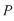
,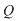
,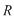
,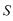
, as those arising from the above theorems.The statement also reflects his general rejection of Aristoteleanism and empiricism masquerading as a false dichotomy between applied and theoretical science. As Gauss repeatedly emphasized, the source of all practical applications is the higher cognitive powers of the mind whose cultivation deserves the highest priority. Hence, Gauss’s insistence that the arithmetic-geometric mean is a “new transcendental”, not an algorithm for calculating elliptical integrals.
In this regard, Gauss was continuing in the direction of Leibniz’s work on transcendental functions, which in turn was a continuation of Cusa’s notion of “{quantity}”. For Cusa, the idea of quantity did not signify a number, in the Aristotelean sense of a quantity of objects. Instead, the concept of quantity signified a generalization of the Pythagorean idea of {dynamis} as that concept is developed by Plato in the Theatetus dialogue and other locations. This is also the more general concept to which belongs the Pythagorean concept of means.
The most efficient means to develop this concept of quantity is, for purposes of this pedagogical, by reference to Kepler’s reference to Cusa’s notion of quantity in the {Mysterium Cosmographicum}:
It was matter which God created in the beginning; and if we know the definition of matter, I think it will be fairly clear why God created matter and not any other thing in the beginning. I say that what God intended was quantity. To achieve it he needed everything which pertains to the essence of matter; and quantity is a form of matter, in virtue of its being matter, and the source of its definition. Now God decided that quantity should exist before all other things so that there should be a means of comparing a curved with a straight line. For in this one respect Nicholas of Cusa and others seem to me divine, that they attached so much importance to the relationship between a straight and a curved line...
To which Kepler appended a clarifying footnote in the second edition published 25 years later:
Therefore my language should be corrected, my intention retained. In establishing the number of the bodies, and the size of the spheres, lines should indeed be eliminated in the first place; but in displaying the motions, which are accomplished by lines, let us not despise lines and surfaces, which alone are the origin of the harmonic proportions.
Thus, just as Pythagoras, Archytas and Plato understood that the line, square and cube depend on different species of quantities, Cusa and Kepler recognized that physical motion depends on a still higher species of quantity–the species of quantity associated with the relationship between the curved and straight. For Cusa, this species of quantity is associated with the relationship between a circle and its diameter. This was Kepler’s initial view as well. But as the Kepler problem demonstrates, the elliptical motion of planetary orbits cannot be expressed by the quantities associated with circular motion, indicating the existence of a different species of quantity.
This was the subject of Gauss’s investigations.
A preliminary attempt to identify this “elliptical” species of quantity was made by Leibniz in his investigations of Kepler’s elliptical orbits. In this respect, Leibniz emphasized that elliptical motion depended not merely on a change in angle, as in circular motion, but on a combined change in angle and length. He called such motion “harmonic motion”–a concept derived from the fact that he considered the single motion of a planet as the combined effect of the geometric, which he associated with the angular change; the arithmetic, which he associated with the changing velocity, and the harmonic, which he associated with the inverse relationship between the velocity and the distance of the planet from the Sun.
These three distinct relationships, Leibniz recognized, are all expressed in the hyperbola. While this recognition contributed to Leibniz’s discoveries of natural logarithms and the catenary principle, he was unable to find the {unifying} principle under which these three types of quantities were subsumed in elliptical motion.
Gauss was the first to truly recognize that the species of quantity associated with elliptical motion is a different species than the quantity on which circular and hyperbolic motion depends. Elliptical transcendentals, Gauss realized, subsumed not only the arithmetic, geometric and harmonic species of quantities, but a different, {higher species} of quantity associated with the arithmetic-geometric mean.
He made his initial steps toward understanding this principle by the age of fourteen when, according to his later testimony, he began his research into the arithmetic-geometric mean. This work was later linked to his studies of Johann Bernoulli’s lemniscate, in which he recognized the doubly periodic nature of elliptical quantities. By 1800, the essential features of his “new transcendental” were known to him, but he continued to elaborate them for the next 40 years.
Though he defined the means to calculate this quantity using the well known algorithm, described above, of iterating the arithmetic and geometric means between two numbers, Gauss realized that the true nature of this new quantity is not expressed by the algorithm from which its approximate value is calculated, any more than the true nature of the square root of two, or pi, can be gleaned from an infinite series used to approximate their values.
The nature of the elliptical quantity, Gauss emphasized in his fragments, is like all quantities, found not in the quantities themselves, but in the nature of the {transcendental functions} from which they are derived. As was later elaborated more fully by Riemann, Gauss recognized that this nature could only be expressed in the complex domain.
The complex domain is, in fact, the domain of the arithmetic-geometric mean. Gauss referenced this himself in his only published elaboration of the geometric characteristics of the complex domain, his {Second Treatise on Bi-quadratic Residues}. There Gauss identified that the arithmetic-geometric nature of the complex domain is reflected in the fact that between any two complex numbers, the arithmetic mean is the mean linear difference, while the geometric mean is the mean angular change. This is illustrated by the simplest case: the arithmetic mean between and
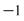
is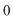
which is the mean distance between them and the geometric means are the positive and negative values of the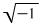
, which are the mean angular change between and .To begin to demonstrate this pedagogically, it is useful to take the following example directly from Gauss’s fragments:
The arithmetic-geometric mean between 3 and 1 can be approximated by taking their arithmetic mean and calling that "
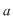
”, and their geometric mean calling that “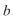
”,. Now take the arithmetic mean between “” and “”, and the geometric mean between “” and “”. Continue to iterate this process. This function rapidly converges on a transcendental magnitude, approximated by the value 1.86362....This process can move backward, Gauss showed, by taking the square root of
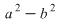
which he called “”. Then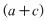
and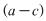
are the magnitudes whose arithmetic mean is 3, whose geometric mean is 1, and whose arithmetic-geometric mean is 1.86362....Such a magnitude was already illustrated above with respect to the elliptical orbits whose major and minor axes were the arithmetic and geometric means of their predecessors. In other words, if we begin with an ellipse whose major and minor axes are in the proportion 3 to 1,
the radius of the circle on which the subsequent sequence of related ellipses converges is approximately 1.86362....
Ironically, that circle cannot be derived from any circle. It can only be derived from a sequence of related ellipses. Therefore, though it may look like a circle, it is a circle within the domain of ellipses, {not} the domain of circles. It is a special type of ellipse from which a manifold of related ellipses unfolds.
To dig deeper into this domain, Gauss investigated the functional relationship between one related sequence of ellipses and another.
To do this he proceeded in a manner analogous to Leibniz’s determination of the arithmetic relationship between the catenary and the exponential functions. For the elliptical transcendentals Gauss sought functions that were functionally related by the arithmetic-geometric mean. He found such functions were defined by a geometric series whose exponents were square numbers.
|
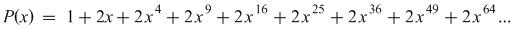 |
|
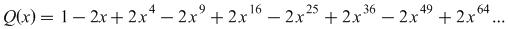 |
Figure 5
These functions had earlier been explored by Leibniz and Bernoulli in their studies of probability theory.
Gauss called these functions
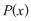
and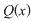
and showed that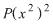
is the arithmetic mean between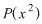
and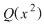
and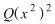
is the geometric mean between and . He further showed that the arithmetic-geometric mean between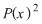
and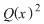
is always equal to 1.He later showed that these functions are special forms of the more general {hypergeometric function}.2
The manifold of all ellipses can be expressed by a general function in which the major and minor axes are expressed by and respectively. By defining the axes in terms of these functions Gauss could then invert the problem and investigate the functional relationship among the different branches. Gauss showed that, if an ellipse were defined by a specific value of and , the axes of the ellipses related to it by the arithmetic-geometric mean are: , ;
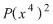
,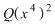
; ,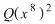
; etc.In other words, when the axes of the related ellipses are expressed in terms of Gauss’s functions, the related ellipses form an exponential function of Gauss’s functions! This higher form of exponential function, has an analogous relationship to the elliptical transcendentals as Leibniz’s exponential functions have to the catenary. Where the catenary has an arithmetic relationship to two exponentials, the elliptical transcendental has an {arithmetic-geometric} relationship to the exponential function of Gauss’s functions!3
But Gauss recognized that this manifold was much richer and deeper. For in each iteration of the arithmetic-geometric mean, the geometric mean has two values, one positive and one negative. Thus, each iteration produces two possible branches of the arithmetic-geometric mean. Consequently, the algorithm generating the arithmetic-geometric mean between two numbers produces not one, but an infinite number of transcendental numbers! Since these branches are formed from the negative values of the square roots, most of them exist only in the complex domain. (See Figure 6.)
|
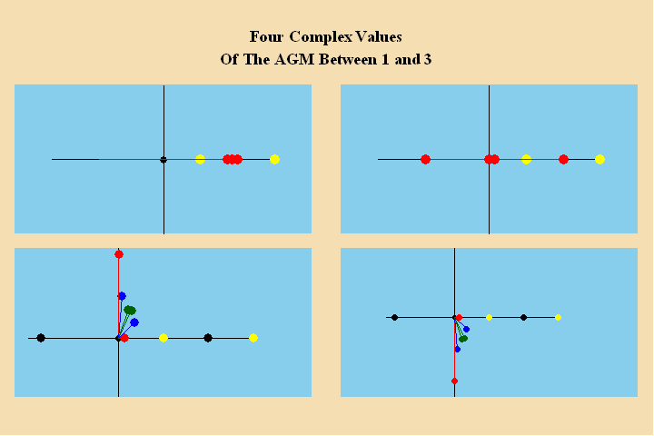 |
| Figure 6 |
Thus, in the domain of visible ellipses, the arithmetic-geometric mean signifies a series of related ellipses, that unfold from a circle whose radius is the arithmetic-geometric mean of each ellipse in the sequence. But, from the standpoint of the complex domain, that series is simply one branch in a manifold of series of related arithmetic-geometric means.4 Each branch can be thought of as a type of sequence converging on one of the complex values of the arithmetic-geometric mean. The complete manifold of related branches can be thought of as a manifold of of such sequences.
It may seem at first that such a manifold is extremely complicated. Yet Gauss found a simple, geometric conception under which all these branches are related.
In a sequence of ellipses with a common arithmetic-geometric mean, any one ellipse in the sequence can generate the entire sequence from the arithmetic and geometric means of the major and minor axes. The related ellipses will all have different eccentricities. But since the eccentricity is a function of the proportion of the major to the minor axis, those eccentricities will also be related. Though the axes of all the ellipses have the same arithmetic-geometric mean, one of these can be identified as the simplest. For purposes of illustration, that ellipse can be defined by the one whose major and minor axes are whole numbers. Thus, the ratio of the major to the minor axis of this ellipse, can serve as a parameter from which to define the entire sequence. This may seem a bit trivial in this case of visible ellipses, but it will be a useful reference point for an analogous relationship among the non-visible complex branches.
Similarly with all the related complex branches. Since all the branches are related, any one branch can generate all the others. This seems somewhat straightforward if one begins with two real numbers and iterates all the branches. But the inverse problem becomes more complicated, but at the same time more revealing. Under what principle are all the complex branches of the arithmetic-geometric mean connected?
To answer this question, Gauss looked for a functional relationship among the branches, analogous to the functional relationship among the major and minor axes of the related ellipses. He did this by expressing the major and minor axes of the ellipse as functions of and respectively. In this way he could invert the problem and reveal the, deeper, underlying implications of the arithmetic-geometric mean. Instead of investigating only the function that expressed how the arithmetic-geometric mean defined a sequence of ellipses, he investigated the function that expressed how changes in the eccentricity of an ellipse changed the arithmetic-geometric mean. In this way, all the relationship among all the complex arithmetic-geometric means associated with a given “eccentricity” could be investigated.
He called that function “{the elliptical modular function}.”
While this function can appear quite opaque as a formula, Gauss showed that it had a very simple and beautiful geometric relationship which he illustrated in a famous sketch in his notebooks. (See Figure 7a and 7b.)
|
|
| Figure 7a |
|
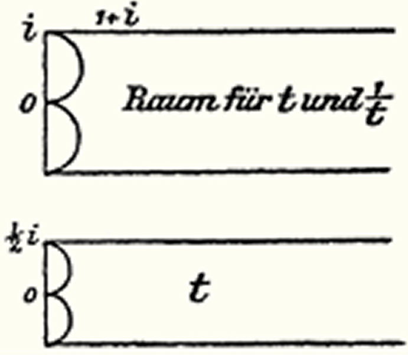 |
| Figure 7b |
In this sketch, the region exterior to the larger circle and within the boundaries of the horizontal lines defines what Gauss called the “fundamental region”. In this region lay the branch which Gauss called the “simplest.”5 The entire region, which can be considered a curvilinear triangle with two vertices at and
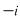
and the other vertex at infinity, is the manifold of all possible “simplest” branches. All related branch will be found by mapping this fundamental region into the circular triangles formed inside the larger circle, or, by translating the fundamental region, up or down, by or , respectively.Thus, the underlying manifold of the arithmetic-geometric mean and the elliptical functions is can be characterized as a complete “discontinuum”.
Gauss’s geometric treatment of the complex arithmetic-geometric mean is a special case of the more general elliptical modular functions. Though Gauss developed this concept in his fragments, it was Abel, Jacobi and especially Riemann who gave the elaboration. A brief summary of this more general form might be pedagogically helpful.
As has been developed in previous installments of this series (See, Riemann for Anti-Dummies Part 64), Riemann showed that the general characteristic of elliptical functions is their double periodicity. This double periodicity is a more general expression of the physical principle that in elliptical motion, unlike in a circle, the elliptical function is incommensurable, differently, with the angle and the arc. This double incommensurability is a general characteristic of elliptical functions, but the specific relationship of this double incommensurability, with reference to an ellipse, is a function of the eccentricity of the ellipse.
This characteristic expresses itself very simply in Riemann’s surfaces, by the shape of the parallelograms that geometrically express each period. (See Figure 8.). The double periodicity of ellipses of different eccentricities are expressed by different shaped parallelograms. (See Figure 9.)

|
| Figure 8 |
|
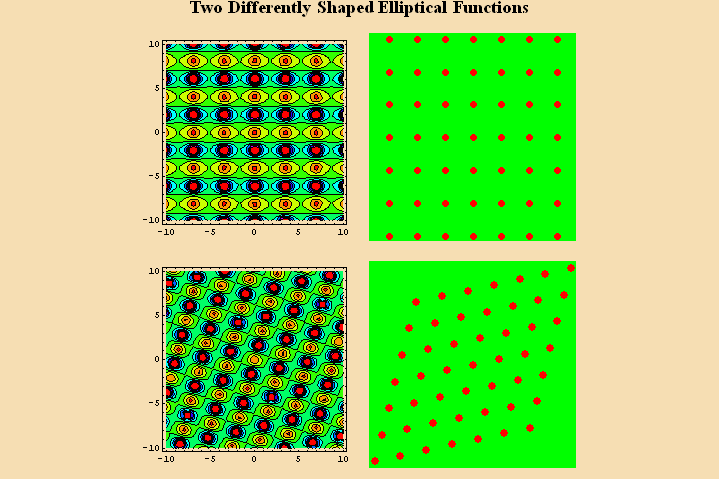 |
| Figure 9 |
But, in a specific elliptical function, any number of parallelograms can generate all the others, in an analogous manner to the generation of related ellipses and branches of the arithmetic-geometric mean. (See Figure 10.)
|
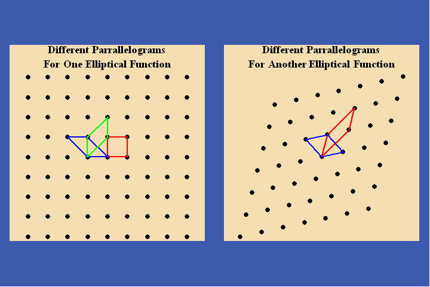 |
| Figure 10 |
The shape of each parallelogram can be uniquely expressed by the ratio of the two complex numbers that define the parallelogram, similar to the way the uniqueness of an ellipse can be defined by the ratio of its axes. This ratio is called, “the period ratio”. As in the case of the complex branches of the arithmetic-geometric mean, one of these period ratios can be designated the fundamental one. All the others are derived by the same transformations as Gauss illustrated in his famous sketch. (See Figures 11a, 11b, 11c)
|
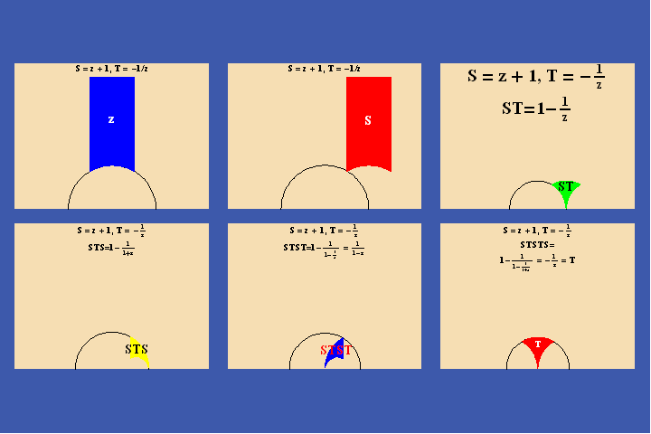 |
| Figure 11a |
|
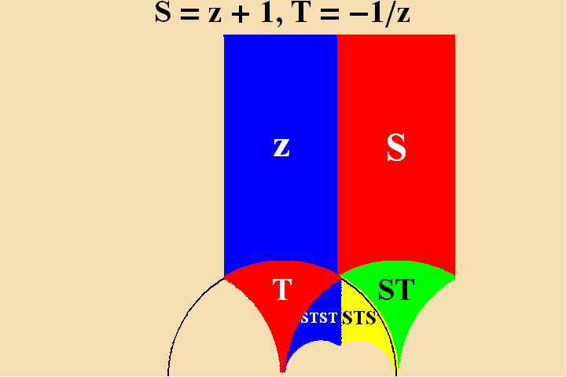 |
| Figure 11b |
|
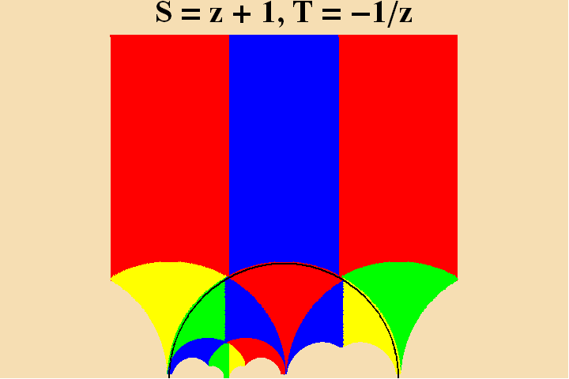 |
| Figure 11c |
This brief summary of the epistemological implications and historical context of Gauss’s investigations of the arithmetic-geometric mean is meant to serve merely as a beginning point for a more detailed study to be carried out in pedagogical workshops over the ensuing period. But it is sufficient to indicate, when viewed from the standpoint of Riemann’s subsequent elaboration of Abelian functions and hypergeometries, how our conception of the universe as a whole must change, with the pursuit of physical investigations into the very large and the very small. These boundaries will undoubtedly be extended over the course of the twenty-first century with a rapid acceleration of man’s exploration of space and the harnessing of nuclear and sub-nuclear processes. This future for direction for mankind will only occur, however, if we approach these twenty-first century developments, by rejecting the pervasive irrationality of the twentieth, and adopting the more advanced epistemological standpoint which reached its pinnacle, until LaRouche’s discoveries, in the middle of the nineteenth.
1 Jonathan Tennenbaum and Bruce Director, How Gauss Determined the Orbit of Ceres, Fidelio, Summer 1998.
2 These functions, along with two other functions that Gauss called R and S, are the elliptical analogues of exponential functions and are the rapidly converging series he mentioned in the fragment quoted above. Jacobi and Riemann later developed their characteristics further, calling them “theta” functions. Just as the manifold of all exponential functions, is the manifold of all possible catenaries, the manifold of all theta functions is the manifold of all elliptical transcendentals.
3 Due to the almost universal emphasis on formal mathematics in today’s educational system, the reader may have a hard time grasping the idea of a function that is derived as a relationship first and a formula second. No such difficulty should arise if the reader can recognize that this is the general case, not the exception. For example, is 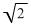 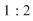
Similarly for the circular and hyperbolic functions. These functions are known precisely by the physical action that generates them, even though their calculations are always ambiguous. This is also the case for the catenary, which, as Leibniz showed, can be known precisely as the arithmetic mean between two exponential functions, even though any attempt to calculate this function is ambiguous. Of course, the hanging chain experiences no such ambiguity. It “knows” precisely what to do!
4 In the complex domain the branch corresponding to the visible ellipses is expressed on the “real” axis.
5 Gauss determined the “simplest” branch generated from two numbers and 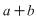 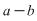 , from the ratio of thearithmetic-geometric mean between
, from the ratio of thearithmetic-geometric mean between  and and the arithmetic-geometric mean between
and and the arithmetic-geometric mean between